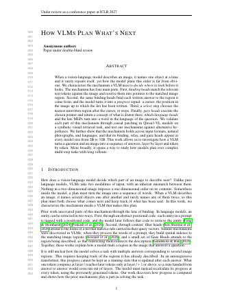
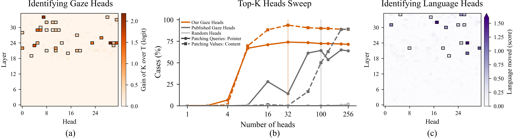
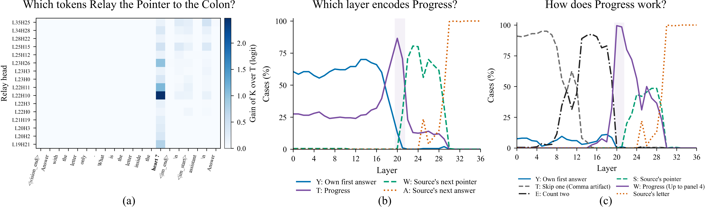

ArXiv
Preprint

Source Code
Github

Interactive
Demo
What is a “Plan” in Transformers?
The word plan can mean many things. We do not mean the reasoning a model writes out before it answers. We mean the order of steps it works out “in its brain”, before it writes a single token.
When a vision-language model (VLM) is asked to caption an image, it names one object at a time, and it almost never names the same object twice. We study how the model is able to do this. We find a human readable plan inside the model’s computations.
Our main finding: the model plans in the language of pointers to the image. It solves the task early, as soon as it reads the user’s question. But instead of reading the answer, it writes down the location in the image where the answer is. It then keeps passing these pointers along to the tokens where it actually needs to answer. Only then does it fetch the answer, looking back at the image.
Surprisingly, the model also keeps track of its progress as a pointer to the image. As soon as it writes an answer, it marks the region of the image it has already answered from, so that it never goes back to describe that region again.
How does a VLM work?
A VLM has two main networks: a vision encoder and a language model. The image is cut into small patches, and the vision encoder turns them into tokens. The question is split into text tokens too. The image tokens and the text tokens are joined into one row, and the language model passes this row through a stack of 36 layers. Each layer has an attention block and an MLP. Inside each attention block, many attention heads work side by side.
The language model writes its answer one token at a time. Attention is the only place where a token can read what was computed at the tokens before it. Earlier tokens cannot look forward to later ones. The primer below opens each part, one level at a time.
Primer: VLM, language model, transformer block, attention, MLP
A VLM writes its answer one token at a time, and every new token passes through the whole stack again. It has no notepad to write "I already said dog", so it must recompute at every token what is left to say from the tokens it has already written.
How does a VLM choose the next thing to describe, and how does it keep track of what it has already described?
The secret ingredient: the task setup
If you read through many works in mechanistic interpretability, one ingredient behind their success is the choice of task. A good task puts the model in a controlled setup, where we can poke at it and take it apart.
For our questions, we design a synthetic task. The VLM gets a single image that looks like a comic strip. The image has several panels, and each panel holds a shape and a letter. We ask for the letter inside a named shape, and we start the reply with "Answer:" so that the next token the model generates is the letter.
Instead of a single answer, we can also ask for several answers by changing the image. When the asked shape sits in several panels, the model lists the letters from left to right, separated by commas.
To keep the rest of the page simple, we name four tokens:
- The shape token is the word that names the shape, star.
- The colon token is the : after "Answer", the last token before the model generates its answer.
- The answer token is the letter the model generates, T.
- The comma token is the , after each letter in a list. The model generates the next letter there.
This task is our secret ingredient. An open-ended description does not let us control which objects the model describes or in what order. Here, we control every detail. The question names a panel by its shape instead of its number, so the model must first find where the star is, and only then read the letter. This separates two jobs we can look for inside the model: finding the panel, and reading it. We later test how much of the mechanism carries over to natural photos.
How do we investigate the VLM?
Activation patching copies one internal state from one run of the model into a second run, and measures how the answer changes.
Every experiment pairs two runs that differ in both the image and the question. The source run asks for the heart in one image, and the target run asks for the star in another. We copy one activation of the source run into the target run, at one token and one layer, and leave everything else in the target run unchanged.
Primer: what is activation patching?
Click through to see one patch.
Why is our task setup important?
We design the inputs so that each kind of information a patch could move leads the target to generate a different letter. The letter the target generates then tells us what the patched state carried. Here, the source's heart sits in panel 4, and the target's star sits in panel 2. Each letter the target could generate means something different:
Whenever we patch a set of heads, we also patch the same number of random heads from the same layers as a control. If the random heads do nothing, the effect belongs to the heads we found.
An overview of the plan
Every step of the plan works with pointers. A pointer is the location of a panel, such as "look in panel 2", before the model has read what is there. At the shape token, binding heads match the requested shape against the image and resolve a pointer to every matching panel (Bind). Relay heads then carry the pointer to the token where the answer is generated (Relay). Gaze heads execute the pointer, following it back to its panel to read the letter (Gaze). For a list, the same binding heads bind each written answer to the panel it came from. The comma token keeps these pointers as the model's progress, the panels it has already answered from (Progress). The model then selects the nearest matching panel after its progress, or stops (Select). Each step runs through a small set of attention heads.
Click through the steps below. Each column is one token, drawn as its stack of 36 layers.
a pointer: which panel progress: done up to here the letter read there Each dot is one attention head at its layer. Click a dot to see where it looks.
Look at any head
Pick a set of heads, then one head. The image shows where that head looks, and the bars show which text tokens it reads.
Click on any cell
Test the plan: guess the letter before you look
Each test copies one internal state from one run of the model, the source run, into another, the target run. This copy is the patch from the previous section. Guess the letter the target generates before you look. The letter shows what the copied state carried.
Feel free to come back to this figure once you have read the rest of the page.
We start by patching the entire residual vector at the colon token, the token's full internal state, from the source into the target, one layer at a time. Up to layer 20, the target's answer is unchanged in 99.6% of cases or more. From layers 23 to 29, the target answers K: the patch transfers the pointer resolved in the source run, but the target still reads the letter from its own image. From layer 30 on, the target copies the source's answer, D, in 95% of cases or more. This shows that the colon token at layers 23 to 29 holds a resolved pointer. The model knows where the answer is before it reads what it is. Where is this pointer resolved?
Binding: where does the pointer come from?
To localize the token where the pointer is resolved, we patch the residual vector at every token of the prompt, at every layer. Besides the colon token, only the shape token, star, carries the pointer, at layers 16 to 20. The model resolves the pointer while it is still reading the question.
We start by patching the output of one attention head at a time at the shape token, for all 1,152 heads, and rank the heads by how much each patch raises the score of K. We find that the top 16 attention heads, at layers 15 to 21, resolve the pointer. Patching the outputs of these 16 heads moves the target to K in 85.9% of cases, while the same number of random heads from the same layers does so in at most 0.1%. We call them binding heads, because they bind a word in the question to a region of the image.
We further dissect how these heads resolve the pointer by patching their queries and keys separately. Recall that a head matches its query, what it looks for, against the keys of the image tokens, what each of them offers. Patching the queries of the top 8 query heads makes the target answer P, the letter inside its own heart, in 81.0% of cases. Letting the top 8 key heads read the source's image keys makes the target answer R in 83.1% of cases. Patching both together moves the pointer itself, K, in 95.0% of cases. In other words, the queries act like the instruction "I need to look for stars", and the keys of the image tokens act like "I am the panel with the star".

Relay: how does the pointer reach the answer?
Since attention is the only component that moves information between tokens, some heads at the colon token must fetch the pointer from the shape token.
To find them, we patch the values that each head at the colon token reads from the earlier tokens, one head at a time, while its query and keys stay unchanged. We rank the heads by how much each patch raises the score of K. We find that the top 16 attention heads, mostly at layers 19 to 23, carry the pointer: patching their values moves the target to K in 87.5% of cases. We call them relay heads. When the relay heads read the source's values at one token only, the shape token alone moves the target to K in 47.3% of cases, against at most 9.9% for any other token. The relay heads read the pointer mostly from the shape token, where the binding heads wrote it.
To show that the relay heads carry the pointer, we test whether they are necessary and sufficient. First, when we block the relay heads from attending to the text, the target keeps its own answer in only 7.8% of cases, against 99.8% when random heads are blocked. Second, we patch the pointer with the binding heads, but let only the relay heads of an unedited target read from that patched run. Nothing else of the patched run reaches the target, yet the target answers K in 89.0% of cases, as often as in the binding experiment. These show that the relay heads alone carry the pointer from the question to the answer.
Gaze: how does the VLM read the panel the pointer names?
To read the letter, some attention heads at the colon token must use the pointer to look back at its panel. To find them, we patch the queries of one attention head at a time at the colon token, and rank the heads by how much each patch raises the score of K. We find that the top 32 attention heads, at layers 19 to 34, execute the pointer: patching their queries moves the target to K in 74.0% of cases, against 0.0% for random heads. We call them gaze heads.
The pointer acts through the gaze heads. When we patch the pointer with the binding heads but keep the gaze heads' queries at the target's values, the target keeps its own answer in 98.4% of cases. When the gaze heads read the source's image values instead, the target answers with the source's letter at its own panel in 93.7% of cases. Most of our gaze heads are among the Gaze Heads of our earlier work (23 of 32 in the published top 100), which were found by watching where a model looks while it describes comic panels. Our smaller set is causally more effective: the published top 100 move the target to K in 64.2% of cases, against 74.0% for our 32 gaze heads.
Do the gaze heads bring back a word, or an idea?
To test whether the gaze heads return the meaning of what they see or the word for it, we use colored shapes without letters and ask "What shape is the green marker?" in English, German, French, or Chinese. The model answers with the right shape in the question's language.
What the gaze heads return is nearly the same for one image asked in two languages, and different for two images asked in one language. When we patch the outputs of the gaze heads from a source that asks in another language about another image, the target names the source's shape in its own language in 82.0% of cases, and never changes the language. So the gaze heads return the concept, not the word.
The language is added by a different set of heads. We find that the top 16 attention heads, at layers 19 to 35, add the language: patching their outputs from a source in another language switches the answer's language in 95.3% of cases, without changing the shape. We call them language heads. The late MLP layers then combine the concept and the language into the final word.

Progress: how does the VLM keep its place in a list?
When several panels are correct, the model has to keep track of how far it has come, which we call progress, and pick the next panel, which we call select. Since the model has no notepad, it must recompute its progress at every token from the answers it has already written.
Only the tokens after the first answer can carry progress: the answer and comma tokens. To localize progress, we patch the residual vector of the comma token, from a source that has written one letter, into the colon token of a target that has written none, one layer at a time. The two runs ask for different shapes and share no letter. They share only the panel the source has just answered from. At layer 20, the target skips this panel and moves on to its second answer in 91.0% of cases, and in 70.0% at layer 21. The target skips a panel it never answered from, because a source with a different shape and different letters answered from it. This shows that the comma token at layers 20 and 21 holds progress, and that progress is about a panel, not a shape or a letter.
Progress could be a count ("two answers done"), a set of panels ("panels 2 and 4 done"), or a position ("done up to panel 4"). To tell them apart, we build a pair in which each form predicts a different answer. At layer 20, the target answers with the first matching panel after panel 4 in 98.4% of cases, and in 97.6% at layer 21. Progress is a position: the list is done up to panel 4. Where does this progress come from?
To test whether the answer token sets progress, we take a target that has written two letters, and a source image in which the last written letter sits one panel further to the right. We let the binding heads at the last answer token read the source's keys, while everything else stays the same. If the binding heads bind the written letter to its panel, the target skips one more panel. This happens in 84.2% of cases with the 16 binding heads, and in 0.0% with random heads. In other words, binding happens twice, largely through the same heads. At the shape token they bind the requested shape to its panels, and at each answer token they bind the letter just written to the panel it came from. The comma token then turns that panel into progress.

Select: how does the VLM choose the next panel?
With the matching panels and progress both at the comma token, we can read the choice from the model without any patch, by prefilling the letters out of order. With only the second heart written, the model answers with the third in 92.8% of lists. With the third and then the first written, it answers with the second in 95.6%. So select starts at the progress and takes the nearest unwritten panel, preferring the right, and goes back when nothing is left to the right. When nothing is left at all, the model stops. The choice is made at the comma token, at layers 20 to 25.
Does this happen on real photos too?
On natural photos with list questions such as "What animals are in this image?", the plan carries over. At the comma token, the gaze heads attend more to the object named next than to the object just named in 83.6% of lists. When we block the comma token from attending to an object already described, the model names that object again in 79.6% of cases. Setting the language heads to their English averages turns 96.5% of non-English answers into English. The binding, relay, and gaze heads also appear at every model size from 2B to 32B.
Try it yourself: watch a VLM plan in your browser
Pick an image and a question, and watch the 2 billion parameter version of the VLM answer one token at a time. At the shape word, the page draws where the binding heads look. Before each token of the answer, it draws where the gaze heads look. Watch the gaze heads move to the next panel, or the next animal, before the VLM writes it.
On the photos, the VLM runs in your browser. This downloads about 1.2 GB of model weights once, and needs a browser with WebGPU, such as a recent Chrome or Edge on a laptop or desktop. In other browsers the page plays recordings of the same runs. The strips of panels are recordings of the full-size model, and play at once.
For all the experiments, checks, and numbers, see our paper.
Parallel work: does a code LLM plan the same way?
While we studied a VLM that reads pictures, we also ran a parallel project on language models that write code, with no pictures at all. That project asks how a model keeps a goal alive while it writes a long program. The answer it finds has the same shape as the plan on this page.
The next step is set before it is written. In the code LLM, a small set of attention heads, the goal heads, holds the next step a few tokens before the model starts to write it. In the VLM, the binding heads find the panel at the shape token, before any answer is written.
The request is read again, not carried along. The code LLM does not carry its goal forward from token to token. It keeps reading the goal again from the task description. The VLM does the same at every comma token, where it reads the question and the picture again.
Progress picks what comes next. The code LLM compares the goal it has just read with the code written so far, and that picks its next step. The VLM compares the matching panels with its progress, and that picks its next panel.
The two projects use different models and different tasks: Qwen2.5-Coder-32B and Llama-3.3-70B writing code there, Qwen3-VL-8B reading pictures here. Our hypothesis is that this is a property of transformers themselves. A transformer has a fixed number of layers, so it cannot keep one running state across many written tokens. Reading the request again at every step, and checking it against what is already written, may be how a transformer follows any task with many steps. We have tested this only in these two settings.
How does this connect to earlier work?
Earlier work found pieces of this plan in text-only models. Language models keep track of which thing goes with which detail by tagging each thing with a hidden label and following that label later (Feng and Steinhardt, 2024). They use a similar trick to follow who believes what in a story (Prakash et al., 2026). And they handle lists with filter heads (Sen Sharma et al., 2026), heads that pick out the items of a list that match a rule. Our binding heads do something similar over the panels of a picture.
In models that see pictures, Assouel et al. (2026) found that the words of a question build an index of the matching places in the picture. Our own earlier work on Gaze Heads found heads that look at the part of a picture being described, so that turning them turns the description.
These works explain how a model finds one place that answers a question. Here we show how these parts work together when the answer is a list, and we add the missing pieces: how the VLM tracks its progress through the picture and selects what to read next.
How to cite
The paper can be cited as follows.
bibliography
Rohit Gandikota, Arnab Sen Sharma, Adam Belfki, David Bau. "How VLMs Plan What's Next." arXiv preprint arXiv:2611.21600, 2026.
bibtex
@article{gandikota2026plan,
title={How VLMs Plan What's Next},
author={Gandikota, Rohit and Sen Sharma, Arnab and Belfki, Adam and Bau, David},
journal={arXiv preprint arXiv:2611.21600},
year={2026}
}